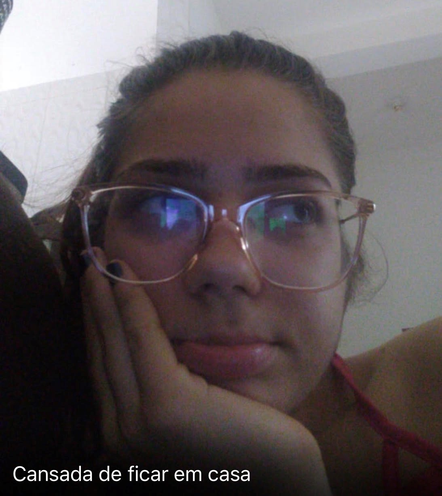
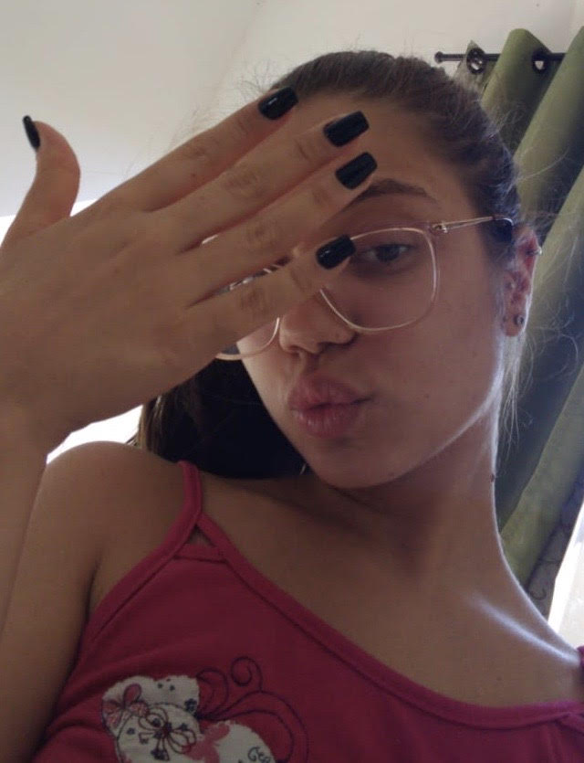

Versão 2.0 - Motivos do Fábio amar você
Essa é uma versão que a muito tempo eu digo que faria, e não acho que teria momento melhor para fazer. PS: Agora com acentuação.
-
Ser engraçada

Essa foi a primeira foto que você me enviou, lembro até que fiquei feliz e falei pra mim mesmo: "Se ela me enviou uma foto talvez tanha a possibilidade de ela querer algo".
-
Ser fofa

Ligou o flash do celular só pra me mandar uma foto, ce ta doido fiquei feliz demais.
-
Ter o sorriso mais lindo desse mundo

Nesse dia eu voltei pra casa rindo até pras paredes, começando a se conhecer e já tava com essa intimidade toda, chega fiquei bobo.
-
Gostar de filmes românticos e me recomendá-los

Depois desse dia eu comecei a gostar desses filmes, e de vez enquando entrava um cisco no meu olho rs.
-
Ter o beijo mais gostoso

Esse dia então, voltei pra casa com a alma fora do corpo de tão bom que tinha sido.
-
Por gostar dos meus mimos

Mimar a minha princesa é uma das coisas que eu mais gosto de fazer, tanto que nesse dia eu fiquei muito feliz só por te deixar feliz, e o melhor de tudo alimentada.
-
Ser a formanda mais linda

O dia em que dissemos eu te amo um pro outro, e eu ainda pude presenciar a mulher mais linda daquele salão inteiro, e ainda por cima minha, sem palavras pra descrever o quanto foi bom ir naquela festa contigo.
-
Ter as unhas mais lindas e fofas

Essa unha sua ficou difude, falei que ce tava linda e ainda me mandou figurinha de deboche, mas a verdade é que não existe um momento em que você não esteja deslumbrante.
-
Por me levar nas festas

Um dia muito especial para nós, decidimos de última hora para onde iríamos, e conseguimos pegar os últimos ingressos que tinham pra vender ainda.
-
E por ser essa namorada maravilhosa

Ficamos o dia inteiro de chamego aqui em casa, pra depois dar um role e mais chamego, e enfim, depois de fazer esse update, só tenho a te agradecer por tudo que estamos vivendo, e que vamos ainda viver, te amo mais que tudo, 15 voltinhas no universo e contando.